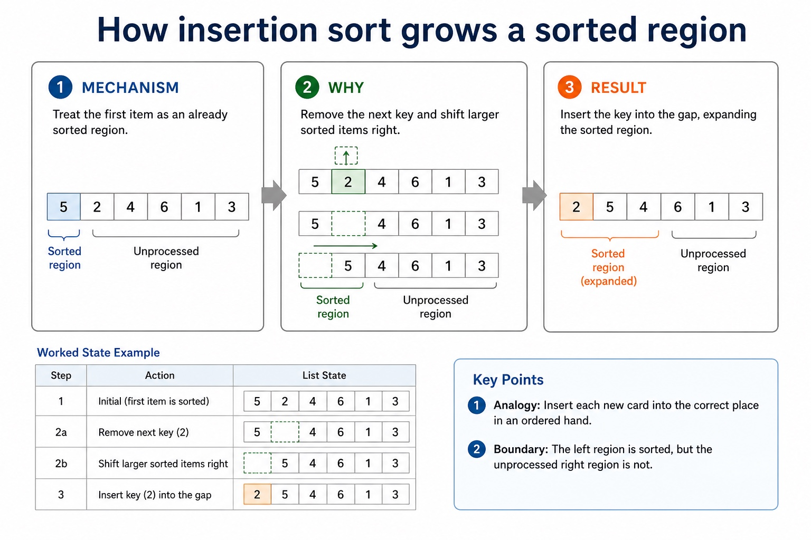
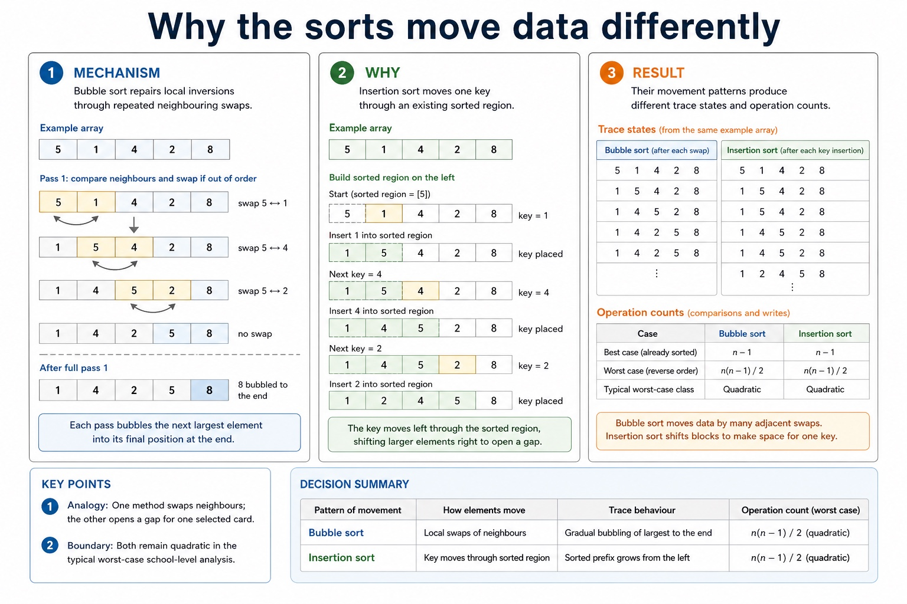
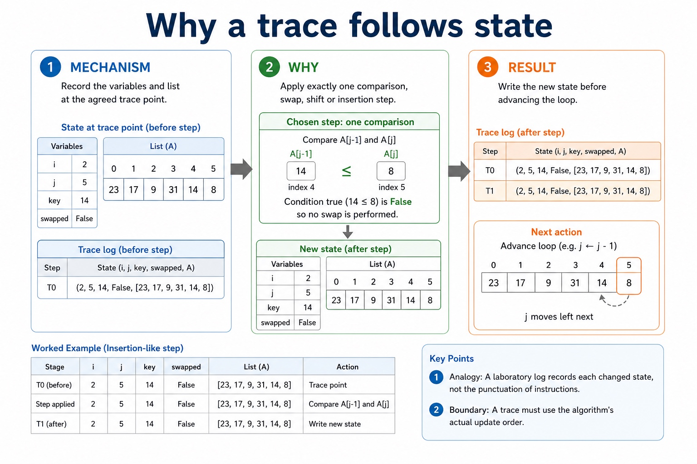

Sorting is not magic; it is disciplined comparison with receipts.
Bubble sort repeatedly compares adjacent items and swaps them if they are in the wrong order. Insertion
sort takes the next item and inserts it into the correct place in the already sorted left section. You will
trace both methods step by step using Cambridge-style algorithm reasoning.
Tracebubble sort passes and insertion sort movements accurately
Comparehow adjacent swaps differ from inserting into a sorted section
Explaincommon trace errors, stopping points and algorithm behaviour
5142
Bubble sort first pass[1, 4, 2, 5]
Insertion sort first movementtake 1, insert before 5 → [1, 5, 4, 2]
Bubble sort pushes large values right. Insertion sort builds a sorted left-hand section.
Why this matters
Paper 2 sorting questions usually mark the intermediate states. The final sorted list alone is not enough.
Common trap
Do not sort by intuition. Use the named algorithm's exact movement rule, or the trace stops matching the method.
Warm-up hook
Four cards, two legal ways to tidy them
Starting from [5, 1, 4, 2], which statement describes bubble sort's first comparison?
Choose the bubble sort first action.
Knowledge explanation
Bubble sort: compare adjacent items and swap if needed
Core rule
Compare neighbouring items from left to right. If the left item is larger than the right item, swap them. After one full pass, the largest item has moved to the end.
Chinese support: bubble sort = 冒泡排序；adjacent = 相邻的；swap = 交换。
Mechanism: Compare neighbouring values and swap an inverted pair.
Reason: A pass moves one extreme value toward its final end position.
Result: Repeat until a pass makes no swaps or the unsorted region ends.
Analogy: Repeatedly exchange adjacent books until the largest reaches the shelf end.
Boundary: One pass does not generally sort the entire list.
Knowledge explanation
Insertion sort: insert the next item into the sorted left section
Core rule
Treat the first item as sorted. Take the next item, move larger items in the sorted section right, then insert the item into its correct position.
Chinese support: insertion sort = 插入排序；sorted section = 已排序部分。
First movements on [5, 1, 4, 2]
sorted left: [5]
take 1 -> insert before 5: [1, 5, 4, 2]
take 4 -> insert between 1 and 5: [1, 4, 5, 2]
take 2 -> insert between 1 and 4: [1, 2, 4, 5]
How insertion sort grows a sorted region

How insertion sort grows a sorted region: mechanism, reason, result, analogy and boundary condition.
Mechanism: Treat the first item as an already sorted region.
Reason: Remove the next key and shift larger sorted items right.
Result: Insert the key into the gap, expanding the sorted region.
Analogy: Insert each new card into the correct place in an ordered hand.
Boundary: The left region is sorted, but the unprocessed right region is not.
Comparison
Same final list, different route
Feature
Bubble sort
Insertion sort
Main action
compare adjacent items and swap
take next item and insert into sorted left section
After early work
large items move towards the right end
left side becomes sorted
Trace evidence
show comparisons and swaps in a pass
show key item movements and insertion point
Exam trap
jumping straight to sorted list
moving the wrong direction through sorted section
Why the sorts move data differently

Why the sorts move data differently: mechanism, reason, result, analogy and boundary condition.
Mechanism: Bubble sort repairs local inversions through repeated neighbouring swaps.
Reason: Insertion sort moves one key through an existing sorted region.
Result: Their movement patterns produce different trace states and operation counts.
Analogy: One method swaps neighbours; the other opens a gap for one selected card.
Boundary: Both remain quadratic in the typical worst-case school-level analysis.
Pseudocode vs Java
Trace Cambridge-style algorithms, not Java syntax habits
Bubble sort outline
FOR Pass <- 1 TO Length - 1
FOR Index <- 1 TO Length - Pass
IF List[Index] > List[Index + 1] THEN
Temp <- List[Index]
List[Index] <- List[Index + 1]
List[Index + 1] <- Temp
ENDIF
NEXT Index
NEXT Pass
Java support only
for (int pass = 0; pass < list.length - 1; pass++) {
for (int index = 0; index < list.length - pass - 1; index++) {
if (list[index] > list[index + 1]) {
int temp = list[index];
list[index] = list[index + 1];
list[index + 1] = temp;
}
}
}
Exam reminder: Java uses 0-based array indexes and braces; Cambridge pseudocode examples often use 1-based indexing and keywords such as FOR, IF, ENDIF and NEXT.
Why a trace follows state

Why a trace follows state: mechanism, reason, result, analogy and boundary condition.
Mechanism: Record the variables and list at the agreed trace point.
Reason: Apply exactly one comparison, swap, shift or insertion step.
Result: Write the new state before advancing the loop.
Analogy: A laboratory log records each changed state, not the punctuation of instructions.
Boundary: A trace must use the algorithm's actual update order.
Interactive sort chooser
Identify the method from the movement
Choose a clue to classify it.
Interactive bubble pass
Trace one full bubble pass
Choose a list to trace a pass.
Interactive insertion step
Trace insertion sort movements
Choose a list to trace insertion movements.
Worked examples
Sorting traces
Practice with instant checking
Sorting trace accuracy
Type concise answers. Use Show answer after committing to a response.
Mistake debugging
Fix sorting mistakes
Exam-style questions
Original Cambridge-style sorting questions with expandable MS
These questions target sorting traces, comparison of methods and strict algorithm wording.
Summary
Sorting checklist
BubbleCompare adjacent items; swap if left is greater; largest item moves right each pass.
InsertionTake next item; insert it into the correct position in the sorted left section.
TraceShow intermediate states. The final sorted list alone is not enough.
Homework
Clear tasks for consolidation
Task 1: Bubble traceShow two passes of bubble sort on [6, 2, 5, 1]. Record every comparison and swap.Task 2: Insertion traceTrace insertion sort on [6, 2, 5, 1]. Show the sorted left section after each insertion.Task 3: Comparison paragraphExplain the difference between bubble sort and insertion sort using the words adjacent, swap, insert and sorted section.